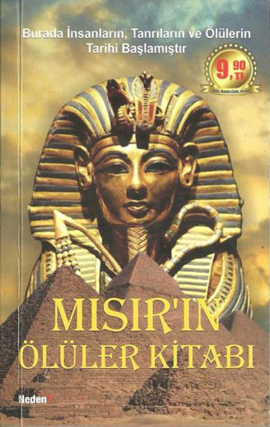

Mısır’ın Ölüler Kitabı

Orijinal Adı: Egypt's Book-of Death
Çeviren: Selim Yeniçeri
Genel Yayın Yönetmeni: Tanıl Yaşar iç Tasarım: Adem Şenel Kapak Tasarım: Deniz Karatağ Baskı-Cilt: Melisa Matbaası
I. Baskı Cep Boy / Haziran 2010
Yayıncı Sertifika No: 11389 ISBN 978-975-254-375-1
Melisa Matbaası: Çifte Havuzlar Yolu Acar Sitesi No: 4 Davutpaşa/İstanbul
yayıncı
NEDEN KİTAP www.nedenkitap.com info@nedenkitap.com
GENEL DAĞITIM
GNG Dağıtım Pazarlama Hizmetleri Turgutreis Mah. Giyimkent Sitesi B. 106/23 Esenler/İSTANBUL
Tel: 0212 438 47 70 (pbx) Fax: 0212 438 47 73
MISIR’IN ÖLÜLER KİTABI
Çeviren: Selim Yeniçeri
Neden?